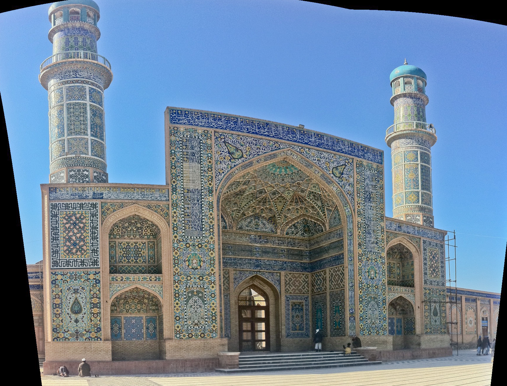
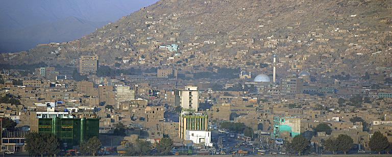

Learn more
About Afghanistan
Discover the history, culture and important places of Afghanistan.
Introduction
Afghanistan in Brief
Afghanistan is a landlocked country located in Central and South Asia. It has a long history shaped by different civilizations, cultures and trade routes. The country is known for its mountains, valleys, historic cities and cultural diversity. Afghan traditions include poetry, music, traditional food, handicrafts and hospitality.

History
Important Dates
- 1747 Ahmad Shah Durrani established the Durrani Empire.
- 1919 Afghanistan gained control over its foreign affairs.
- 1979 The Soviet intervention in Afghanistan began.
- 2001 A new political period began after the fall of the Taliban government.
- 2021 The Taliban returned to power after international forces withdrew.
Culture
Interesting Facts
- Afghanistan has many ethnic communities.
- Dari and Pashto are the two official languages.
- Kabuli pulao is a famous Afghan dish.
- The Hindu Kush is a major mountain system.
- Afghanistan has many historical and archaeological sites.
Afghanistan's cultural heritage includes important archaeological and historical sites that reflect the country's long history.
Source: UNESCO World Heritage Centre
Afghan culture is diverse and strongly connected to history and local traditions.
Cities
Major Afghan Cities
| City | Region | Known For | Role |
|---|---|---|---|
| Kabul | Central | Capital and urban center | National capital |
| Herat | Western | Historic architecture | Cultural center |
| Bamiyan | Central | Bamiyan Valley | Heritage and tourism |
| Mazar-i-Sharif | Northern | Blue Mosque | Regional center |
| Kandahar | Southern | Historical importance | Major southern city |
| These cities represent different regions and cultural characteristics of Afghanistan. | |||
Multimedia
Afghanistan Multimedia



Audio: Afghanistan Introduction
Listen to a short audio introduction about Afghanistan.
Audio file: media/afghanistan-intro.wav
Video: The Unseen Afghanistan
The video is available on YouTube. Open it in a new tab.
Watch Video on YouTubeExternal resource
Learn More
Visit the UNESCO World Heritage Centre for more information about Afghanistan's heritage.